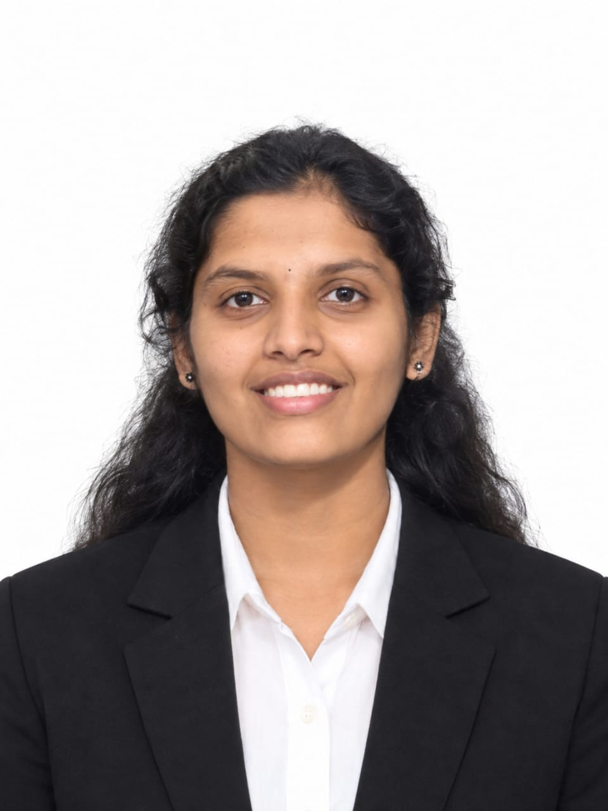

NARISETTY PUNEETHA
Banashankari, Bangalore
📞 +91-6361482876 |
✉ puneethanarisetty02@gmail.com |
🔗 LinkedIn |
💻 Github
|

|
Summary
Computer Science undergraduate with a CGPA of 8.91, passionate about
software development and problem-solving.
Summary
Computer Science undergraduate with a CGPA of 8.91, passionate about
software development and problem-solving. Skilled in Java, Python, HTML,
CSS, JavaScript, MySQL, Git, and Figma, with hands-on experience building
web applications and AI-powered solutions. Passionate about learning
modern technologies and developing impactful software solutions.
Education
Bangalore Institute Of Technology
|
2024 – 2028
|
Bachelor of Engineering in Computer Science and Engineering- CGPA- 8.91
|
Bengaluru, Karnataka
|
Sri Chaitanya Tecchno School
|
2022 – 2024
|
Physics,Chemistry,Mathematics and Computers- Percentage- 70%
|
Bengaluru, Karnataka
|
Course Work
- Object-Oriented Programming (OOP)
- Database Management Systems (DBMS)
- Operating Systems (OS)
- Data Structures (DSA)
Projects
- Developed an AI-powered web application that analyzes resumes and provides personalized feedback to improve
resume quality and structure.
- Designed an interactive and responsive user interface using HTML, CSS, and JavaScript for resume upload and
result visualization.
- Implemented the backend using Flask to process user requests and integrate AI-based resume analysis.
- Applied a modular project structure to improve code readability, maintainability, and scalability.
- Designed and developed a web-based learning platform to help students organize study materials and academic
resources.
- Created responsive user interfaces using HTML, CSS, and JavaScript for an intuitive learning experience.
- Implemented Flask routes to handle application requests and deliver dynamic web content.
- Developed a modular project structure for better code organization and easier future enhancements.
- Developed a responsive frontend for a data analytics platform using HTML, CSS, and JavaScript.
- Converted Figma prototypes into responsive and user-friendly web pages with consistent UI design.
- Implemented reusable UI components to improve consistency and maintainability across the application.
- Collaborated using Git and GitHub for version control and efficient project development.
Technical Skills
Programming Languages:
Java, Python, C
Frontend language:
Html,CSS
Database:
MySQL
Tools:
VS Code, GitHub, Figma